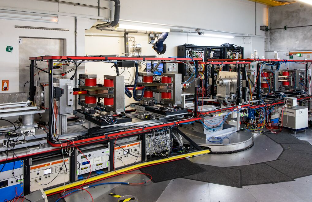

Larmor: high-throughput SANS and spin-echo SANS
Explore the Larmor instrument, from source to detector, and understand how each component contributes to generating our neutron scattering data. Larmor can work as a high-throughput small-angle neutron scattering (SANS) instrument, or use the Larmor precession of polarised neutrons for spin-echo SANS (SESANS), reaching much larger length scales. Click on the components to find out more information about them, and see our short video guide with one of our instrument scientists.
The sample area
Larmor is a time-of-flight instrument with a large sample area that can host a wide range of sample environments and hardware. The sample-to-detector distance is fixed at 4 m. Switching between SANS and SESANS modes takes around 2 to 3 hours, so changing mode within an experiment is not encouraged.

Larmor schematic
The neutron beam travels left to right, straight through the centre of every component. Click a component, or use the arrow keys, to see what it does.
Physical description
Technical specifications
Function
Not satisfied? Meet Larmor directly from our instrument scientists
Meet Dr Scientist in the video who will tell you more about Larmor and the types of science that we typically see on Larmor.